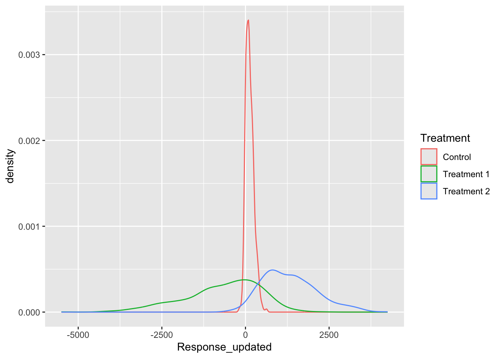
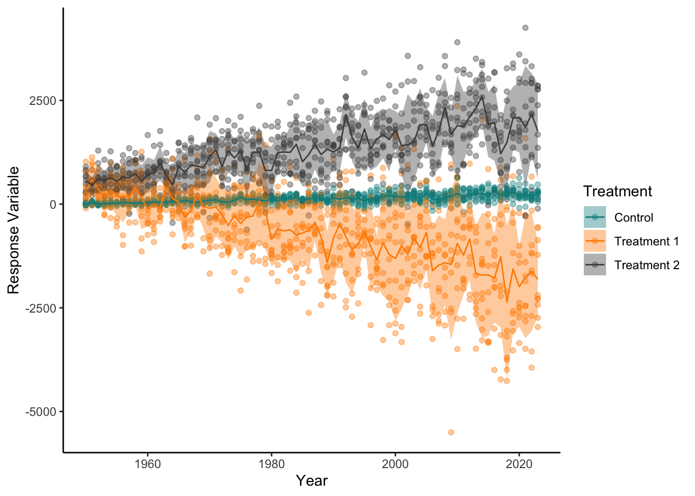
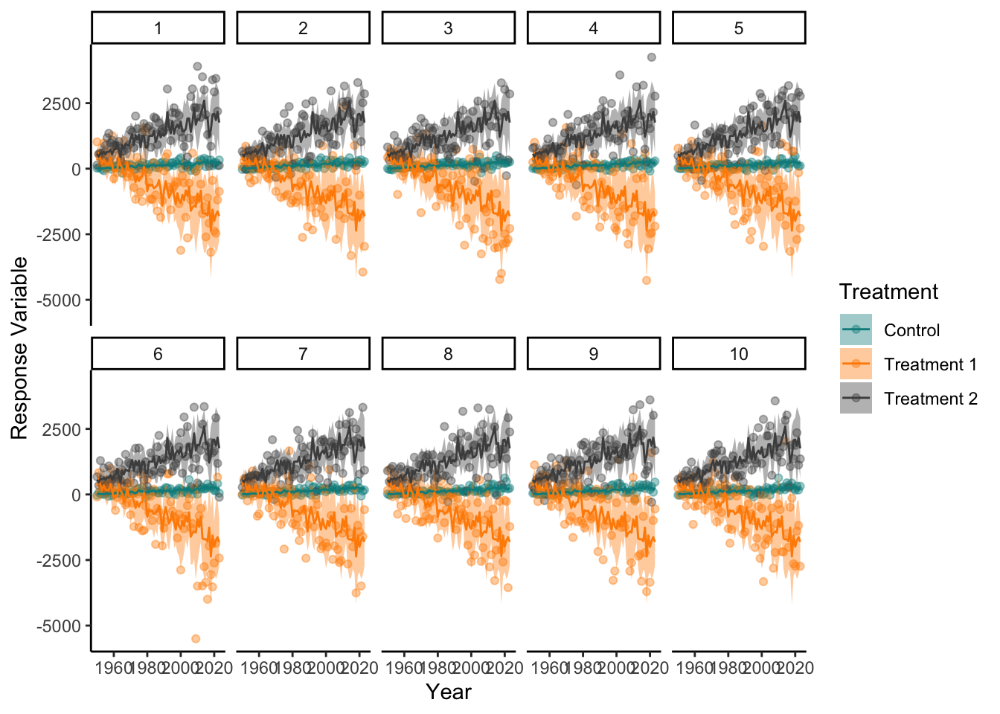

6*6[1] 36R is a open source statistical programming language. It can used through many Graphic User Interfaces (GUI) my preferences is to use RStudio but VSCode is good and you can also code in base R. T This workshop will rely on using code written in RStudio and locations of things (Script, Console, Environment, Plots) with be RStudio specific but the code could be run in any GUI.
Scripts are saved code that you are editing (What I am writing in currently), you then execute (run) the code in the console (Normally below the script window) You can execute code one line by having your cursor on that line in the script or select many lines then click the run buttom or cmd+enter (mac) or ctrl+enter (pc) Everything to the right of a hastag ‘#’ is not executed, therefore we can use this to make comments or writing in scripts
R code can be used to do simple calculations with values or even create lists, vectors, values, dataframes and more complex objects in the “global environment”. (normally top right)
6*6[1] 36We can use either <- or = to assign a value, list or dataframe into an object
a<- 17We use c() to concatenate elements together, which means make them into a vector
b<- c(1,5,5,3,7)We can then perform different functions between objects
a*b[1] 17 85 85 51 119We can even save the results to a new object
c<-a*bR relies upon packages, groups of specific functions, which can be installed from the internet and then loaded into a script. Base R, a package always already installed and loaded with R, is very powerful and useful but less user friendly for some tasks. From Base R we can use the install.packages() function to install a package from online.
#install.packages("dplyr") You only have to do this when you first want the package or want to updated it.
Once a package is installed we have to tell R that we want to use functions from this package so we load it
library(dplyr)
Attaching package: 'dplyr'The following objects are masked from 'package:stats':
filter, lagThe following objects are masked from 'package:base':
intersect, setdiff, setequal, unionThis needs to be run every new R session when this package is used.
We can now run functions from the dplyr library, specifically dplyr is a library, which is part of a group of packages called the tidyverse
We will use this group of packages for reading data into R (readr), manipulating data (dplyr) and visualisng data (ggplot2)
First we can make some data into a dataframe, explore this data, transform and add to it, then we will make some figures with it. R has some very useful random and non-random data generation functions
#install.packages("tidyverse")
library(tidyverse)── Attaching core tidyverse packages ──────────────────────── tidyverse 2.0.0 ──
✔ forcats 1.0.0 ✔ readr 2.1.5
✔ ggplot2 3.5.1 ✔ stringr 1.5.1
✔ lubridate 1.9.3 ✔ tibble 3.2.1
✔ purrr 1.0.2 ✔ tidyr 1.3.1
── Conflicts ────────────────────────────────────────── tidyverse_conflicts() ──
✖ dplyr::filter() masks stats::filter()
✖ dplyr::lag() masks stats::lag()
ℹ Use the conflicted package (<http://conflicted.r-lib.org/>) to force all conflicts to become errorsYear <- seq(from=1950,to=2023,by=1)
Treatment <- c("Control","Treatment 1","Treatment 2")
Rep<- seq(from=1,to=10,by=1)These are three vectors, which we can check information about them with a few simple functions
length(Year)[1] 74summary(Year) Min. 1st Qu. Median Mean 3rd Qu. Max.
1950 1968 1986 1986 2005 2023 length(Treatment)[1] 3summary(Treatment) Length Class Mode
3 character character length(Rep)[1] 10summary(Rep) Min. 1st Qu. Median Mean 3rd Qu. Max.
1.00 3.25 5.50 5.50 7.75 10.00 We want to combine these vectors so we have a row for each rep, year and treatment, we can do this by expanding the grid
df<-expand.grid(Year=Year,Treatment=Treatment,Rep=Rep)This df is all the meta data we want for our dataframe that we want to now make up some response data
Response<-rnorm(n=nrow(df),mean = 15,sd=8)We can then combine this to our df
df$Response<-ResponseWe can check the data we have using a base plot function
plot(df)
Here we can see that the response is totally random, regardless of treatment and year for interesting plotting we can change this For manipulation we can use something called pipes %>% which push the output from one line into the function on the next line we can change the values of response by the values of year and treatment using the case_when function to create clauses similar to if else statements The mutate function can be used to create new columns based on current columns or other values/objects
df_1<-df %>%
mutate(Response_updated=case_when(Treatment=="Control"~jitter(Response)*((Year-1930)/5)-50,
Treatment=="Treatment 1"~jitter(Response)*((Year-1930)*-2)+1000,
Treatment=="Treatment 2"~jitter(Response)*((Year-1930)*1.5)-4))We can now calculate some summary statistics such as mean or standard deviation using group_by and summarise
df_1_summary<-df_1 %>%
group_by(Treatment) %>%
summarise(MeanResponse=mean(Response_updated),
SDResponse=sd(Response_updated))
df_1_summary# A tibble: 3 × 3
Treatment MeanResponse SDResponse
<fct> <dbl> <dbl>
1 Control 127. 121.
2 Treatment 1 -682. 1145.
3 Treatment 2 1316. 814.df_1_summary_year<-df_1 %>%
group_by(Treatment,Year) %>%
summarise(MeanResponse=mean(Response_updated),
SDResponse=sd(Response_updated))`summarise()` has grouped output by 'Treatment'. You can override using the
`.groups` argument.df_1_summary_year# A tibble: 222 × 4
# Groups: Treatment [3]
Treatment Year MeanResponse SDResponse
<fct> <dbl> <dbl> <dbl>
1 Control 1950 1.42 26.6
2 Control 1951 26.8 39.7
3 Control 1952 8.86 32.5
4 Control 1953 7.24 37.5
5 Control 1954 17.0 45.7
6 Control 1955 21.3 33.7
7 Control 1956 42.0 35.2
8 Control 1957 27.2 50.5
9 Control 1958 24.5 49.9
10 Control 1959 30.6 37.1
# ℹ 212 more rowsNow lets try and plot these data, for more complex plots ggplot2 is by far the best package we first make a blank ggplot saying what data we will include then we want to add layers to the plot for what we want to plot and how we want it to look for elements of the plot that change with data from the df we use the aes() function
ggplot(df_1)+
geom_point(aes(x=Year,y=Response_updated,colour=Treatment))
This looks good but could be Nicer there are many geom types to dictate the type of plot
ggplot(df_1)+
geom_density(aes(x=Response_updated,colour=Treatment))
ggplot(df_1)+
geom_col(aes(x=Year,y=Response_updated,fill=Treatment),alpha=0.5)
We can also add new data into the same plot so we could use the summary data too, for this we add the data to the geom we want it used for
ggplot()+
geom_point(data=df_1,mapping=aes(x=Year,y=Response_updated,colour=Treatment),
alpha=0.4)+
geom_ribbon(data=df_1_summary_year,mapping=aes(x=Year,ymax=MeanResponse+SDResponse,
ymin=MeanResponse-SDResponse,fill=Treatment),
alpha=0.4)+
geom_line(data=df_1_summary_year,mapping=aes(x=Year,y=MeanResponse,colour=Treatment))
We can now change the style and appearance , theme() is used to change appearances
ggplot()+
geom_point(data=df_1,mapping=aes(x=Year,y=Response_updated,colour=Treatment),
alpha=0.4)+
geom_ribbon(data=df_1_summary_year,mapping=aes(x=Year,ymax=MeanResponse+SDResponse,
ymin=MeanResponse-SDResponse,fill=Treatment),
alpha=0.4)+
geom_line(data=df_1_summary_year,mapping=aes(x=Year,y=MeanResponse,colour=Treatment))+
scale_color_manual(values=c("darkcyan","darkorange","grey30"))+
scale_fill_manual(values=c("darkcyan","darkorange","grey30"))+
labs(x="Year",y="Response Variable")+
theme_classic()
We could even separate plots by another column
ggplot()+
geom_point(data=df_1,mapping=aes(x=Year,y=Response_updated,colour=Treatment),
alpha=0.4)+
geom_ribbon(data=df_1_summary_year,mapping=aes(x=Year,ymax=MeanResponse+SDResponse,
ymin=MeanResponse-SDResponse,fill=Treatment),
alpha=0.4)+
geom_line(data=df_1_summary_year,mapping=aes(x=Year,y=MeanResponse,colour=Treatment))+
facet_wrap(~Rep, nrow=2)+
scale_color_manual(values=c("darkcyan","darkorange","grey30"))+
scale_fill_manual(values=c("darkcyan","darkorange","grey30"))+
labs(x="Year",y="Response Variable")+
theme_classic()
Google is full of different elements that can be changed within a plot, you can google exactly what you want, then normally stackoverflow answers or blogs will help most